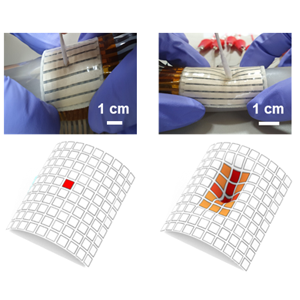
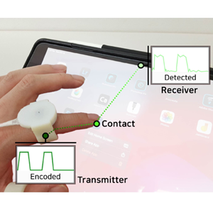
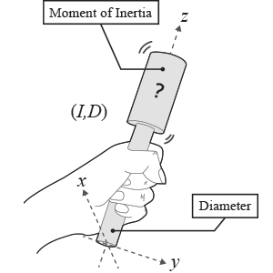
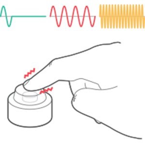
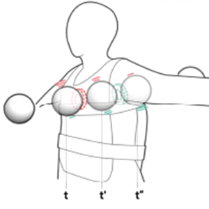
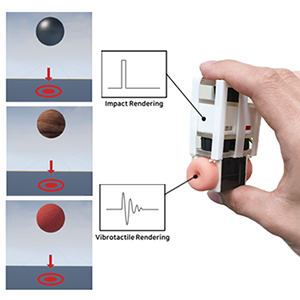
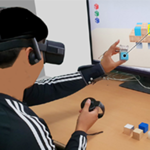
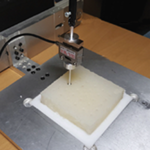

PUBLICATIONS

[J2] Omni-Directional Tactile Profiling Using a Deformable Pressure Sensor Array Based on Localized Piezoresistivity
In Advanced Materials Technologies, vol. X, no. X. 2021 (Accepted)

[C6] Identifying Contact Fingers on Touch Sensitive Surfaces by Ring-Based Vibratory Communication
In Proceedings of the Annual ACM Symposium on User Interface Software and Technology (Virtual Event, USA, October 10-14, 2021). UIST’21. ACM

[J1] Length Perception Model for Hand-held Controllers: The Effects of Diameter and Inertia
In IEEE Transactions on Haptics, vol. 14, no. 2. 2021

[C5] Augmenting Physical Buttons with Vibrotactile Feedback for Programmable Feels
In Proceedings of the Annual ACM Symposium on User Interface Software and Technology (Virtual Event, USA, October 20-23, 2020). UIST’20. ACM

[C4] Body-Penetrating Tactile Phantom Sensations
In Proceedings of the ACM conference on Human Factors in Computing Systems (Hawaiʻi, USA, April 25-30, 2020). CHI’20. ACM

[C3] Realistic Haptic Rendering of Collision Effects Using Multimodal Vibrotactile and Impact Feedback
In Proceedings of the IEEE World Haptics Conference (Tokyo, Japan, July 9-12, 2019). WHC’19. IEEE. (Best Paper Nomination)

[C2] VibEye: Vibration-Mediated Object Recognition for Tangible Interactive Applications
In Proceedings of the ACM conference on Human Factors in Computing Systems (Glasgow, Scotland,May 4-9, 2019). CHI’19. ACM

[C1] Random Forest for Modeling and Rendering of Viscoelastic Deformable Objects
In Lecture Notes in Electrical Engineering (Incheon, Korea, November 11-14, 2018). AsiaHaptics’18. Springer